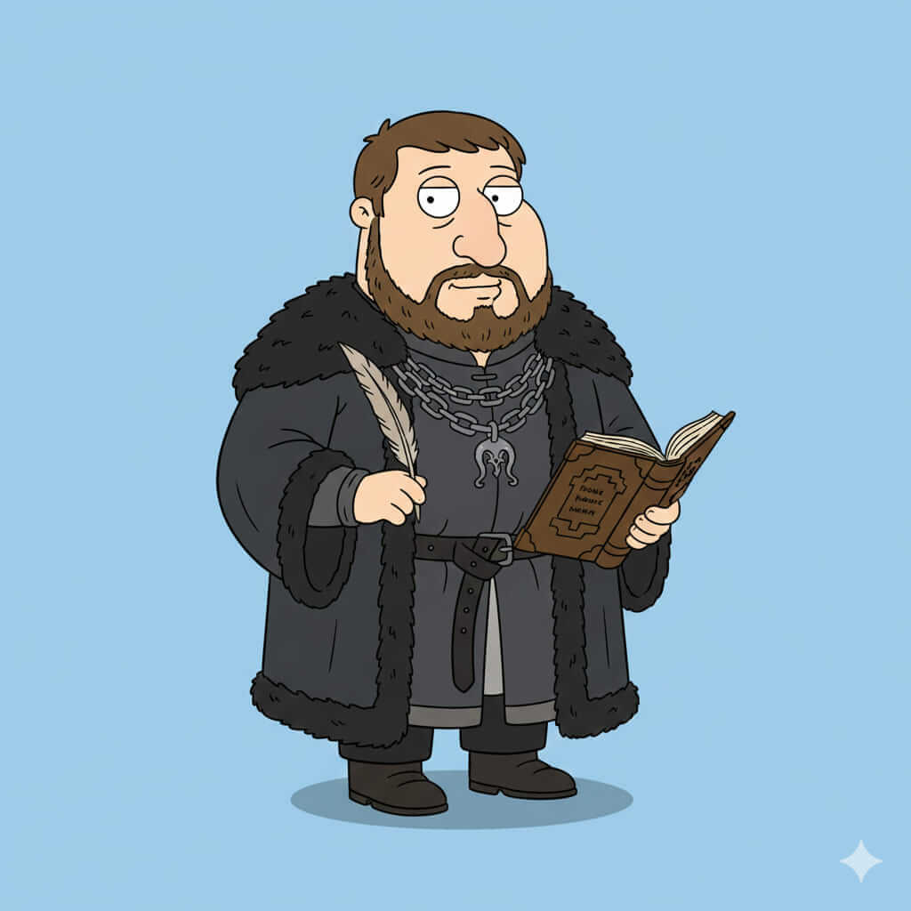

Samlor Tarwyn
Historia
Samlor Tarwyn nació en el corazón de la tierra de Tarwyn, rodeado de templos y bibliotecas donde la sabiduría era el mayor tesoro. Desde joven mostró un talento natural para la sanación y la estrategia, estudiando medicina, historia y filosofía. Su vida estuvo marcada por viajes a regiones afectadas por la guerra, donde aprendió a combinar la ciencia y la magia en la sanación, ganándose respeto y lealtad en todos los rincones de Throonia.
Con el tiempo, Samlor se convirtió en un consejero indispensable, no solo por su conocimiento médico sino por su sabiduría estratégica. Sus decisiones han salvado a ejércitos enteros y han prevenido conflictos mayores. A pesar de su poder, mantiene una vida tranquila y pacífica, guiado por un profundo sentido del deber y la compasión. Su destino es proteger la vida y el legado de Throonia, asegurándose de que el reino sobreviva a las guerras y traiciones que lo acechan.
Casa y relaciones
Casa: Tarwyn.
Familia: : Linaje de sabios y sanadores.
Aliados: Nobles, médicos y guerreros que valoran la vida.
Enemigos: : Casas que buscan el conflicto sin considerar la pérdida de vidas, incluidos Blackmaw y Targheris.
Habilidades y personalidad
Sanación maestra - Sabiduría estratégica - Erudito.
Personalidad compasiva, sabia y paciente, con un fuerte compromiso por proteger la vida y el equilibrio del reino.